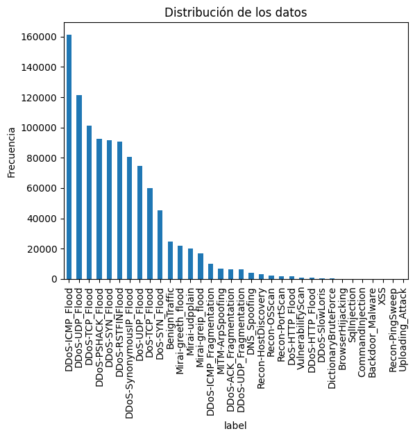
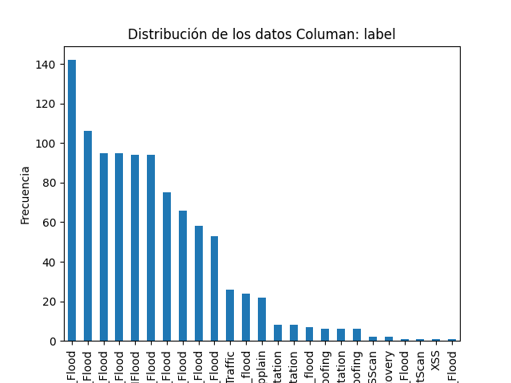
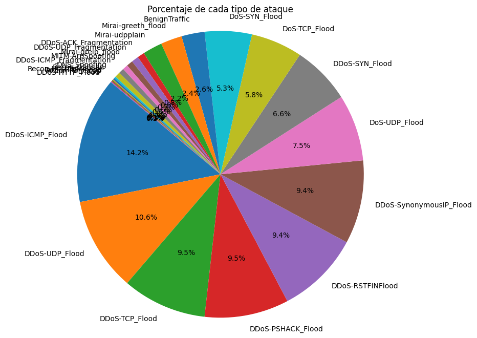
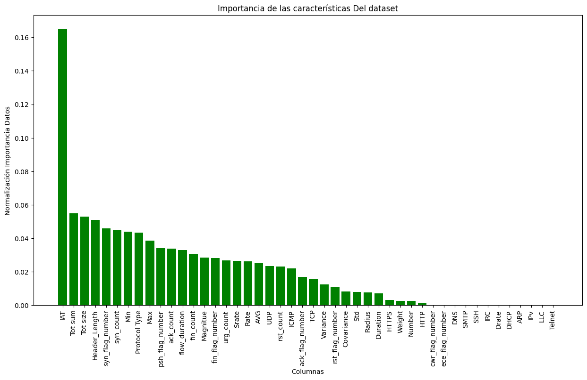
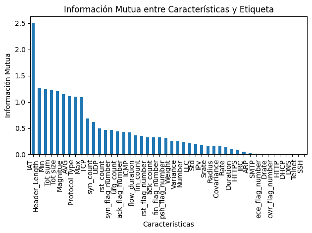
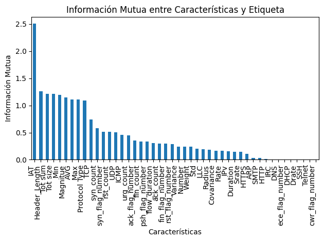

“Las elecciones que hacemos definen quiénes somos.”
Bioshock
“Un hombre elige; un esclavo obedece.”
Assassins Creed 3
No puedes cambiar el pasado, pero puedes cambiar el futuro.”
Conjunto de datos (Pre-Procesamiento)
Formulario para Colocar la
ubicación del archivo
Cargando...
×
Información del Servidor
Poder entender cómo está compuesto el conjunto de datos que se va a trabajar es sumamente
importante para el desarrollo del modelo, por lo tanto, hay que determinar cuál es la
distribución de los datos, cuáles son los componentes que más información aportan y de
cuáles se puede prescindir. Para ello, a continuación, se encontrará información relevante
del conjunto de datos. Por ejemplo, están distribuidos los datos y la matriz de correlación
de las diferentes características del modelo mediante un mapa de calor. A continuación,
podemos observar la cantidad de muestras que tiene cada tipo de ataque en el conjunto de
datos y su respectivo porcentaje del mismo del dataset estudiado los cuales fueron
procesados mediante Google Colab.

Por otra parte, tenemos los resultados del dataset a analizar obteniendo los siguientes resultados:


Importancia de los datos(Normalización)
Otro aspecto para el preprocesamiento de los datos es poder determinar cuáles
son las columnas que mayor información aportan al dataset que, en este caso,
se implementó un modelo de Random Forest para evaluar la importancia de las
características. La salida de este modelo es un gráfico de barras que está
normalizado, donde entre más cerca este el valor de cada columna a 1 nos
indicará que aporta mayor información. A partir de este gráfico podemos
determinar cuáles columnas podemos usar para o son más viables para el
entrenamiento y evaluación del modelo.

Importancia Caracteristicas con variable Objetivo
Otra forma de poder determinar cuáles son las características más
importantes para entrenar el modelo de red neuronal es mediante la
función “mutual_info_classif” de la librería scikit-learn que calcula
la información mutua entre las características y la variable objetivo
o label. Esta librería asocia que entre mas alta sea la información
mutua aportarán mayor información, donde las de menor información mutua
podrán ser descartadas. Además de esta función existen otras como son
la “SelectKBest”,” RFE”, etc.


Matriz Correlacion Datos Data-Set
La correlación es un parámetro que mide la relación entre las características de sus datos
variando entre -1 a 1 considerándose que tienen una correlación positiva perfecta si su
valor es igual a 1 moviéndose de forma simultanea en el tiempo. Por otra parte, si la
correlación es de 0 se considera que los datos no están correlacionados teniendo un
comportamiento aleatorio. Por ejemplo, entre mayor sea la temperatura y la necesidad del
aire acondicionado aumente será positivamente correlacionados, pero si es lo inverso, es
decir, entre mayor la temperatura menor el uso del aire será negativamente correlacionado.
Reducción de dimensionalidad PCA
El análisis de componentes principales (Principal Component Analysis PCA) es un método de reducción
de dimensionalidad que permite simplificar la complejidad de espacios con múltiples dimensiones a la
vez que conserva su información. El método de PCA permite por lo tanto "condensar" la información
aportada por múltiples variables en solo unas pocas componentes. Aun así, no hay que olvidar que
sigue siendo necesario disponer del valor de las variables originales para calcular las componentes.
Dos de las principales aplicaciones del PCA son la visualización y el preprocesado de predictores
previo ajuste de modelos supervisados [1].
Teniendo claro el funcionamiento del PCA para la reducción de dimensionalidad se implementa donde
se tiene como paranetros que se conserve como minimo el 95% de la informacion del dataset